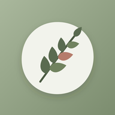
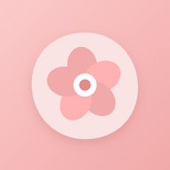

Daily Planners
플래너
로그인 없이 쓰는 오프라인 플래너예요. 기록은 이 기기 안에만 저장돼요.
- Folio가는 선과 큰 숫자로 정리한 미니멀 다이어리열기

업무 플래너세이지 그린의 오가닉 플래너열기
개인 플래너블러시 핑크의 다꾸 감성 플래너열기
- 쓰고 싶은 플래너를 눌러 Safari에서 열어요.
- Safari의 공유 버튼을 누르고 홈 화면에 추가 → 추가를 눌러요.
- 다음부터는 홈 화면 아이콘으로 열면 돼요. 인터넷이 없어도 열려요.
기록은 이 웹사이트에 올라오지 않고 각자의 기기에만 저장돼요. 홈 화면 아이콘을 지우면 그 기기의 기록도 지워지니, 플래너 설정의 백업 파일 만들기를 가끔 눌러 두세요.